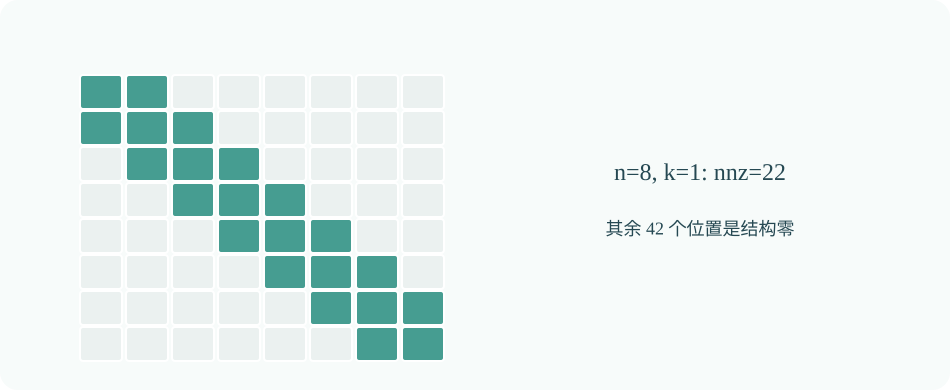

CHAPTER 02 · 2.7.3
带状矩阵：让解算成本跟着带宽而不是 n² 走
带宽、压缩存储、三对角消去和主元填充
一维 Poisson 差分给出 −xᵢ₋₁+2xᵢ−xᵢ₊₁=bᵢ，相邻未知量彼此耦合，远处未知量不直接耦合。系数矩阵仍是 n×n，但可用 O(n) 个条目而非 n² 个条目描述。如何正确存储与求解，取决于上下带宽和选主元策略。
为什么一个 8×8 三对角矩阵最多只有 22 个结构非零项？


数学结构从网格相互作用产生
定义下带宽 kₗ、上带宽 kᵤ：当 i−j>kₗ 或 j−i>kᵤ 时 aᵢⱼ 必为零。三对角系统中 kₗ=kᵤ=1，所以最多只有 n 个主对角元素、n−1 个上对角元素和 n−1 个下对角元素，合计 3n−2。
一般带状矩阵的存储量 O(n(kₗ+kᵤ+1))，若带宽固定可看成线性增长；但如果二维网格排列使带宽随 n 增长，这种优势便会下降。
两种带状数组布局不能混淆
SciPy solve_banded 的紧凑数组约定 ab[kᵤ+i−j,j]=aᵢⱼ（零基索引），高度 kₗ+kᵤ+1。三对角情况下三行依次装上、主、下对角线，两端的空槽不代表矩阵数据。
LAPACK DGBTRF 的工作存储与紧凑输入不同，允许部分选主元导致 U 中产生额外填充；通常要求 LDAB≥2kₗ+kᵤ+1。把紧凑 SciPy 数组直接当作 DGBTRF 工作区会导致错误。
Thomas 消去为什么只有 O(n) 步
对于下对角 aᵢ、主对角 dᵢ、上对角 cᵢ，取 mᵢ=aᵢ/dᵢ₋₁，更新 dᵢ←dᵢ−mᵢcᵢ₋₁、bᵢ←bᵢ−mᵢbᵢ₋₁。最后执行 xᵢ=(bᵢ−cᵢxᵢ₊₁)/dᵢ 的回代。每行只需常数次运算，所以总成本线性。
这些式子构成无主元算法，若主元为零或过小就不能直接继续。非奇异性本身不保证每一步消去都安全；一般带状系统要使用能够交换行并管理填充的库。
带状求解的性能不是静态乘加次数
窄带矩阵的典型直接分解成本可写 O(nk²)、因子及工作存储约 O(nk)（k 是代表性半带宽），比稠密 LU 的 O(n³) 更低，但常数、实际填充和缓存都必须另行考虑。
已有因子可对多个右端项复用，真正计时需说明分解是否计入。把所有稀疏矩阵称为带状矩阵同样不正确；稀疏图的编号和填充需要更一般的算法。
一组可验证的对角占优实验
配套 Python 以对角 4、上下对角 −1 构造系统，先执行三对角消去，再用 NumPy 稠密解和原始残差交叉核对。MATLAB 则使用 spdiags 建模。
滑块改变 8×8 的半带宽，矩阵结构图按位置重新绘制并给出 nnz。这个图是在计数，不是未经测试的加速图。
可交互的反例：为什么一个 8×8 三对角矩阵最多只有 22 个结构非零项？
定义下带宽 kₗ、上带宽 kᵤ：当 i−j>kₗ 或 j−i>kᵤ 时 aᵢⱼ 必为零。三对角系统中 kₗ=kᵤ=1，所以最多只有 n 个主对角元素、n−1 个上对角元素和 n−1 个下对角元素，合计 3n−2。